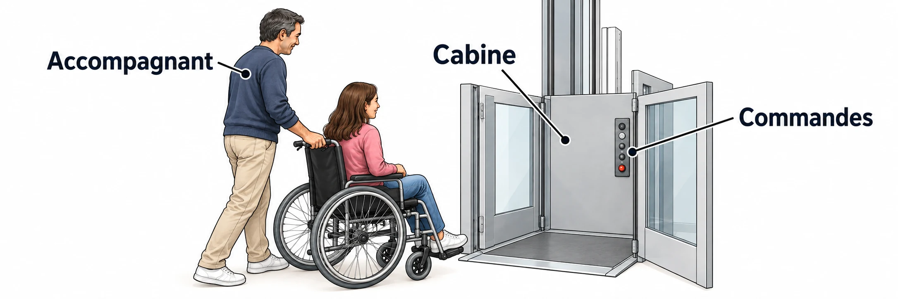

OBSERVER · EXPÉRIMENTER · EXPLIQUER
Un élévateur accessible
Compare les cabines et explore leur place au sol. Les dimensions sont pédagogiques, pas des normes.

✎ Garde ta feuille à côté de toi.Prévois sur papier → manipule → observe → rédige sur papier.
Des observations pour expliquer
- Q5–Q6 : calcule les marges nécessaires sur papier.
- Q8 : compare toutes les exigences et justifie chaque décision.
Appuie ton explication sur une valeur, un changement observé ou une comparaison. Distingue ce que montre le modèle et ce qui reste à vérifier.